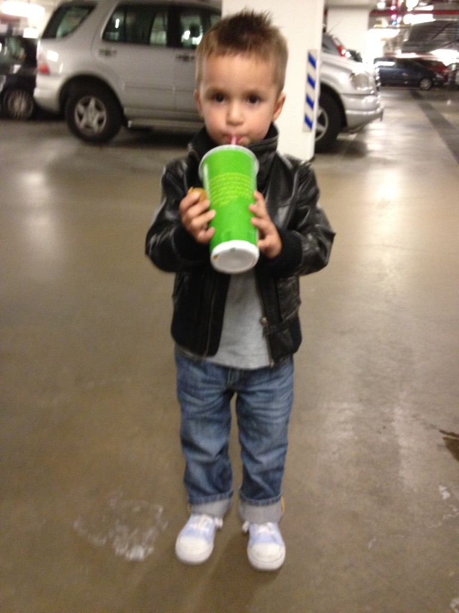

Jeg heter Marcus og er 17 år fra Norge. Jeg bor på Haslum og går på Nadderud videregående skole. På skolen har jeg valgt IT, fysikk og samfunnsøkonomi. Gjennom livet har jeg drevet med mye ulik sport, blant annet svømming, fotball og slalom. Nå er jeg mest interessert i buldring og golf. På fritiden liker jeg også å være med venner og sove.
Faren min ble født i Peru og er halvt peruansk, mens moren min er helt norsk. Jeg er 25% peruansk og har aldri vært i Peru før. Derfor vil jeg en dag reise dit, og besøke familie der. Jeg er enerbarn og har ingen kjæledyr.
Nettsider jeg bruker: YouTube og Frontend Mentor
Pasta
IT
Hund
Sommer